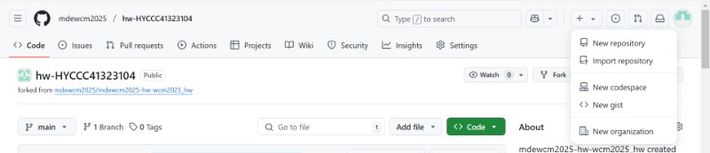

About <<
Previous Next >> Task
w1
git 指令與 github 倉儲練習:
以下練習將利用電腦輔助設計室中 C: 既有的可攜程式環境(要用portable_wcm2025裡的start.bat), 在近端建立一個 git 倉儲, 然後與 Github 上空白的倉儲進行對應. 完成後使用者可在多個地點將 Github 上的倉儲以 " git clone" (可以把老師檔案裡的倉儲內容複製到我新建的倉儲) 取下進行改版. 當近端某一舊倉儲版本落後 Github 上倉儲版本時, 則可利用 git pull 取下遠端新增的版本資料後繼續改版. 完成後再新增提交推送至 Github 倉儲.
練習步驟:
步驟一:
點選自己的usb裡的portable_wcm2025中舊版的可攜程式中的 start.bat
啟動之後, 在其中一個命令列式視窗中執行下列指令:
|
1
2
3
4
|
Y:\>cd tmp
Y:\tmp>mkdir w1
Y:\tmp>cd w1
Y:\tmp\w1>git init
|
上列指令第一行"cd tmp"是利用 cd (更換目錄指令) , 將工作目錄從 Y 槽的根目錄更換到 tmp 目錄, cd 是 change directory 的意思
第二行 "mkdir w1"則利用 mkdir (建立目錄) 建立 w1 目錄, mkdir 是 make directory 的意思
第三行" cd w1" 再利用 cd 將目錄更換到 w1
第四行則在 w1 目錄中執行 git init 指令, 表示已經可以在可攜程式搜尋路徑中執行 portablegit 中的 git.exe, 並要求執行 init, 也就是 initialize 的意思, 將此目錄(w1) 作為起始作為 git 倉儲, 執行 git init 之後, git 會在 w1 目錄中建立一個 .git 目錄(要記得在顯示中打開隱藏的檔案), 其中帶有 git 所需的設定檔案, 與存放版本資料的資料架構.
步驟二:
註記使用者的帳號與電子郵箱, 也還沒有設定推送的目的地, 因此先在可攜系統中設定使用者帳號:
git config --global user.name "your github account"
接著設定電子郵箱:
git config --global user.email "your email"
name = HYCCC41323104
email = linsdaughtermia@gmail.com 
步驟三:
在先登入 github.com, 然後建立一個完全空白的倉儲。
建立倉儲的方法:
1.點圖片中github中網頁裡的右上角的加號，點選new repository 可以新建新的倉儲

2.然後進去之後網頁就會像下面這張圖一樣，在repository name 的地方填新建的倉儲名稱，下面的Description可以填關於倉儲的附註。
其餘所有選項都不用更改，然後點右下角的create repository。


3.
About <<
Previous Next >> Task